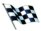

Temporada 2009 da F1
Mudanças no regulamento
A principal mudança do regulamento de 2009 será a redução da carga aerodinâmica dos carros, com o objetivo de facilitar as ultrapassagens. Serão proibidos os apêndices, o difusor (parte de trás do assoalho) seguirá um desenho padrão, e o aerofólio traseiro será drasticamente reduzido.
O aerofólio dianteiro será móvel e controlado por um motor elétrico. Com isso, os pilotos poderão alterar o ângulo de ataque de acordo com o ponto da pista em que estiverem. O spoiler foi abaixado e alargado, indo até o limite dos pneus.
Para a temporada 2009 será introduzido o KERS (Sistema de Recuperação de Energia Cinética), ele é composto por duas baterias, que armazenarão energia gerada nas freadas, que será reutilizada com a injeção de mais alguns cavalos no motor.
Devido a mudança de regulamento previsto para 2009 pela FIA, a Bridgestone irá produzir pneus slick, é o retorno dos pneus lisos e sem sulcos a categoria.
Equipes

Reino Unido - Vodafone McLaren Mercedes

Itália - Scuderia Ferrari Marlboro

Alemanha - BMW Sauber F1 Team
França - Renault F1 Team

Japão - Panasonic Toyota Racing
Itália - Scuderia Toro Rosso
Austria - Red Bull Racing
Reino Unido - AT&T Williams

Índia - Force India F1 Team
Reino Unido - Brawn GP F1 Team
Pilotos
Os 3 pilotos mais bem classificados até o momento são:
Foto
nome
pontos

Jesson Button
72

Rubens Barrichello
56

Sebastian Vettel
53